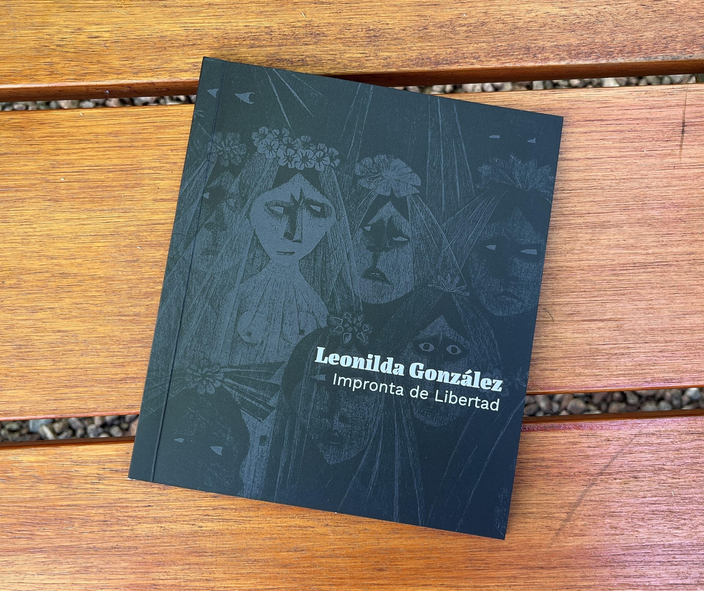

Impronta de Libertad
Catálogo de arte impreso dedicado a la obra
de Leonilda González.
Entiendo el diseño como un proceso de unión. Muchas veces las ideas, los mensajes y las referencias aparecen sueltos, como hilos flotando. Mi trabajo parte de observar y reunir esos elementos dispersos, tensarlos y hacer los nudos necesarios para que se sostengan entre sí y encuentren una forma clara y coherente.
A través del diseño, las ideas se ordenan, adquieren sentido y se vuelven visibles. Me interesa crear piezas que conecten, que se lean con facilidad y comuniquen con sensibilidad.
Catálogo de arte impreso dedicado a la obra
de Leonilda González.
Video musical inspirada en la canción Bonito
de Jarabe de Palo.
Colección de estampados infantiles inspirados en flora acuática latinoamericana.